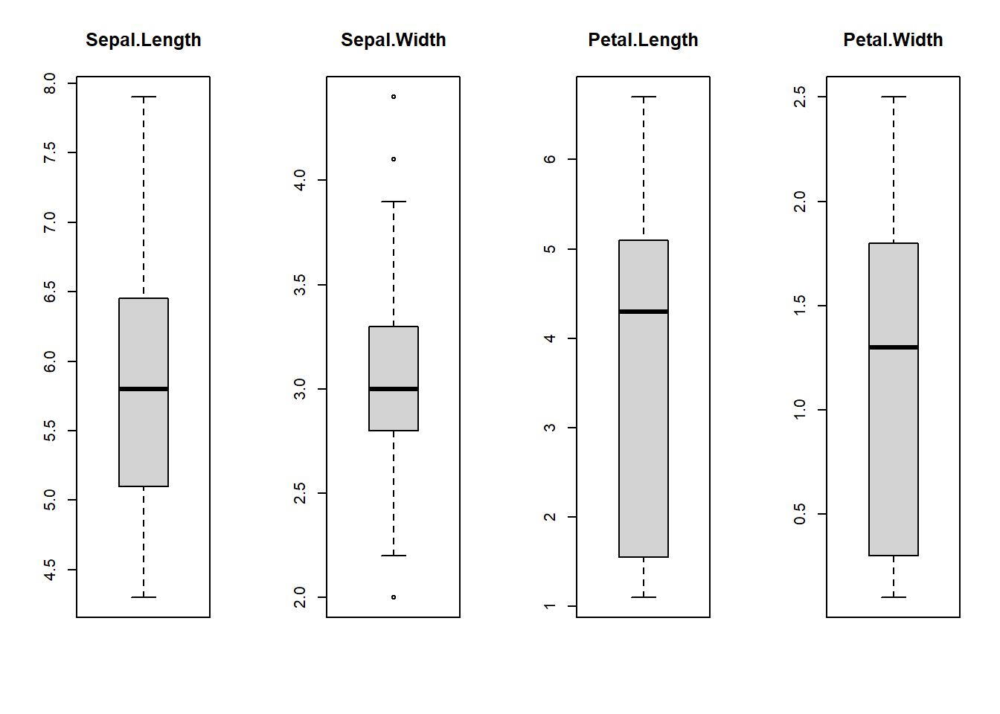
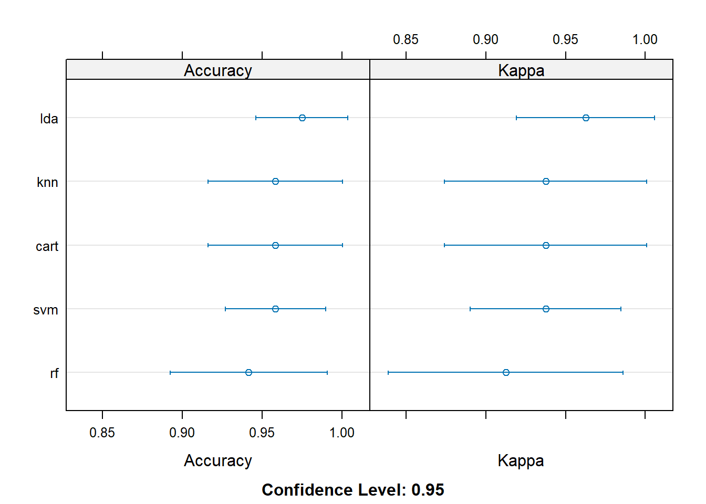

knitr::opts_chunk$set(echo = TRUE, fig.height=5, fig.width=7, message = F, warning = F)I will be following the process found on this site by Jason Brownlee.
An ode to template creation
So this author is using the iris flowers dataset, which I will use too. However, if time allows, I’ll create a mirror project with another dataset. The researcher behind the iris flowers research was a eugenist [post source here; his name Edgar Anderson].
1. Define Problem
Characteristics for Data
- Numeric columns
- Classification problems (i.e., inputs of characteristics to determine the iris)
- Few columns and 100-200 observations
- All columns are in the same unit and scale; otherwise scaling and transformations would need to occur
2. Prepare Data
library(pacman)
p_load(readr, tidyr, magrittr, knitr, tidyverse, janitor, broom, dplyr, caret,
lattice, # for caret
kernlab, # caret
randomForest) # caretdata("iris")
dataset <- iris set.seed(12345)
# 80% to train models, 20% validation dataset
# split the data into two sets
validation_index <- caret::createDataPartition(
dataset$Species,
p = 0.80,
list = FALSE
)
# 20% used for validation
validation <- dataset[-validation_index, ]
# 80% used for training and testing
dataset <- dataset[validation_index, ]Summarize the Dataset
Dimensions
dim(dataset)[1] 120 5Types of Columns
sapply(dataset, class)Sepal.Length Sepal.Width Petal.Length Petal.Width Species
"numeric" "numeric" "numeric" "numeric" "factor" Data Peek
head(dataset) Sepal.Length Sepal.Width Petal.Length Petal.Width Species
1 5.1 3.5 1.4 0.2 setosa
2 4.9 3.0 1.4 0.2 setosa
3 4.7 3.2 1.3 0.2 setosa
4 4.6 3.1 1.5 0.2 setosa
6 5.4 3.9 1.7 0.4 setosa
8 5.0 3.4 1.5 0.2 setosaLevels of the Species Column
# using base
levels(dataset$Species)[1] "setosa" "versicolor" "virginica" # 3+ categories in a column : multinomial
# 2 categories in a column: binomial/binaryBreakdown of Species Column
# using base
percentage <- prop.table(table(dataset$Species)) * 100
cbind(freq = table(
dataset$Species),
percentage = percentage) freq percentage
setosa 40 33.33333
versicolor 40 33.33333
virginica 40 33.33333Summary of all Columns
summary(dataset) Sepal.Length Sepal.Width Petal.Length Petal.Width
Min. :4.300 Min. :2.000 Min. :1.100 Min. :0.100
1st Qu.:5.100 1st Qu.:2.800 1st Qu.:1.575 1st Qu.:0.300
Median :5.800 Median :3.000 Median :4.300 Median :1.300
Mean :5.853 Mean :3.058 Mean :3.768 Mean :1.217
3rd Qu.:6.425 3rd Qu.:3.300 3rd Qu.:5.100 3rd Qu.:1.800
Max. :7.900 Max. :4.400 Max. :6.700 Max. :2.500
Species
setosa :40
versicolor:40
virginica :40
Visualizations
Univariate
x <- dataset[, 1:4]
y <- dataset[,5]# 2x2 layout for boxplots
par(mfrow = c(1,4))
# loop through each column of 'x' to create a boxplot
for(i in 1:4){
boxplot(x[ ,i], main = names(iris)[i])}
Multivariate
# visually assessing interactions between the variables, 3 colors to represent species types
# caret::featurePlot(
# x = x,
# y = y,
# plot = "ellipse"
#)
### Error message:
# Error in grid.Call.graphics(C_downviewport, name$name, strict) :
# Viewport 'plot_01.panel.1.1.off.vp' was not founda
# "pairs" without "ellipse" is most similar
caret::featurePlot(x = x,
y = y,
plot = "pairs")
### another attempt with a different package
library(GGally)
ggpairs(dataset, columns = 1:4,
ggplot2::aes(color = y))
caret::featurePlot(x = x,
y = y,
plot = "box")
# density plot for each category of species
scales <- list(
x = list(
relation = "free"),
y = list(
relation = "free"
))
caret::featurePlot(x = x,
y = y,
plot = "density",
scales = scales)
3. Evaluate Algorithms
Test harness: 10-fold cross validation
This method estimates accuracy
* Splits data into 10 parts
* Trains 9 parts, tests 1 part
* Releases all combinations of train-test splits
* Repeat 3 times for each algorithm for more accurate estimate
# run algorithms using 10-fold cross validation
control <- caret::trainControl(method = "cv",
number = 10)
metric <- "Accuracy"Formula for accuracy
\[ \text{accuracy} = \frac{\text{correctly predicted instances}}{\text{total number of instances}} ~\cdot~ 100 \]
Build 5 different models for prediction
Evaluate 5 different algorithms
simple linear method
1. Linear Discriminant Analysis (LDA)
nonlinear method
2. Classification and Regression Trees (CART)
3. k-Nearest Neighbors (kNN)
complex nonlinear method
4. Support Vector Machines (SVM) with a linear kernel
5. Random Forest (RF)
### set seed before each run
# simple linear
### LDA
set.seed(7)
fit.lda <- caret::train(Species~.,
data = dataset,
method = "lda",
metric = metric,
trControl = control)
# nonlinear
### CART
set.seed(7)
fit.cart <- caret::train(Species~.,
data = dataset,
method = "rpart",
metric = metric,
trControl = control)
### kNN
set.seed(7)
fit.knn <- caret::train(Species~.,
data = dataset,
method = "knn",
metric = metric,
trControl = control)
# complex nonlinear
### SVM
set.seed(7)
fit.svm <- caret::train(Species~.,
data = dataset,
method = "svmRadial",
metric = metric,
trControl = control)
### RF
set.seed(7)
fit.rf <- caret::train(Species~.,
data = dataset,
method = "rf",
metric = metric,
trControl = control)
### Note from website:
# caret can configure and tune the configuration of each model but that isn't covered in the tutorial I'm going off ofSelect the best model
# summarize accuracy of models
results <- caret::resamples(
list(
lda = fit.lda,
cart = fit.cart,
knn = fit.knn,
svm = fit.svm,
rf = fit.rf
)
)
summary(results)
Call:
summary.resamples(object = results)
Models: lda, cart, knn, svm, rf
Number of resamples: 10
Accuracy
Min. 1st Qu. Median Mean 3rd Qu. Max. NA's
lda 0.9166667 0.9375000 1.0000000 0.9750000 1 1 0
cart 0.8333333 0.9166667 1.0000000 0.9583333 1 1 0
knn 0.8333333 0.9166667 1.0000000 0.9583333 1 1 0
svm 0.9166667 0.9166667 0.9583333 0.9583333 1 1 0
rf 0.8333333 0.9166667 0.9583333 0.9416667 1 1 0
Kappa
Min. 1st Qu. Median Mean 3rd Qu. Max. NA's
lda 0.875 0.90625 1.0000 0.9625 1 1 0
cart 0.750 0.87500 1.0000 0.9375 1 1 0
knn 0.750 0.87500 1.0000 0.9375 1 1 0
svm 0.875 0.87500 0.9375 0.9375 1 1 0
rf 0.750 0.87500 0.9375 0.9125 1 1 0Plot model evaluation results
lattice::dotplot(results)
# the most accurate model is the LDAprint(fit.lda)Linear Discriminant Analysis
120 samples
4 predictor
3 classes: 'setosa', 'versicolor', 'virginica'
No pre-processing
Resampling: Cross-Validated (10 fold)
Summary of sample sizes: 108, 108, 108, 108, 108, 108, ...
Resampling results:
Accuracy Kappa
0.975 0.9625# standard deviation of "accuracy" and "kappa" were shown in the tutorial
### haven't figured it out yet... TBC...4. Predictions + Conclusion
Assessing the accuracy of the best fit model ‘fit.lda’ on the validation set
* It’s ideal to have a validation set in case the model is overfit
predictions <- stats::predict(fit.lda, validation)
confusionMatrix(predictions, validation$Species)Confusion Matrix and Statistics
Reference
Prediction setosa versicolor virginica
setosa 10 0 0
versicolor 0 10 0
virginica 0 0 10
Overall Statistics
Accuracy : 1
95% CI : (0.8843, 1)
No Information Rate : 0.3333
P-Value [Acc > NIR] : 4.857e-15
Kappa : 1
Mcnemar's Test P-Value : NA
Statistics by Class:
Class: setosa Class: versicolor Class: virginica
Sensitivity 1.0000 1.0000 1.0000
Specificity 1.0000 1.0000 1.0000
Pos Pred Value 1.0000 1.0000 1.0000
Neg Pred Value 1.0000 1.0000 1.0000
Prevalence 0.3333 0.3333 0.3333
Detection Rate 0.3333 0.3333 0.3333
Detection Prevalence 0.3333 0.3333 0.3333
Balanced Accuracy 1.0000 1.0000 1.0000Explanation:
Accuracy is 100%. The validation dataset is small (20%) but is within our expected margin of error \(97\% ~\pm~4\%\). Concluding that we might have an accurate and a reliably accurate model.
End notes: That was fun as heck. Shout out to Jason